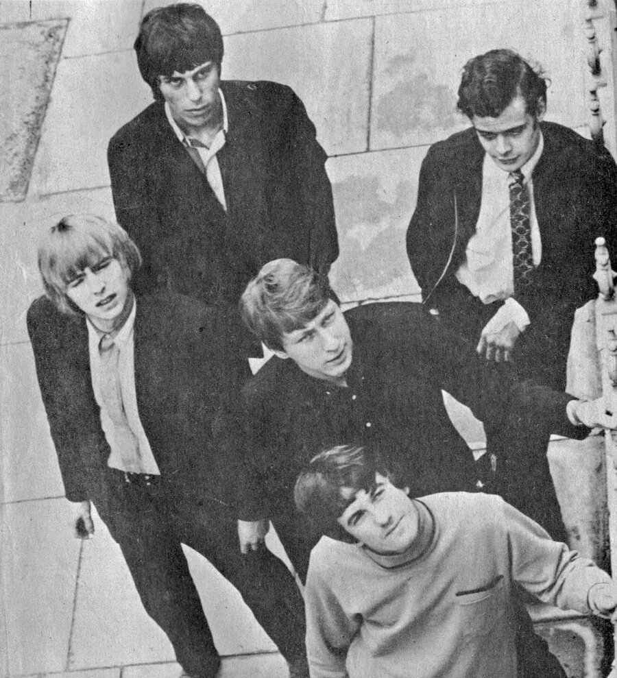

For Your Love by The Yardbirds turned a rejected demo into rock's first harpsichord hit.
The song made the band stars and pushed guitarist Eric Clapton out the door within weeks.

Table of Contents
- The Song Graham Gouldman Almost Lost
- Inside the Harpsichord Session at IBC Studios
- Chart Success and the Departure of Eric Clapton
- FAQ
The Song Graham Gouldman Almost Lost
Songwriter Graham Gouldman was still a teenager when he wrote the song.
He worked shifts at a gentlemen's outfitter near Salford Docks in Manchester.
He later said The Beatles pushed him to try writing something of his own.
Gouldman first cut it as a demo with his own group, the Mockingbirds.
Their label turned the song down.
It was reportedly passed over again by both Herman's Hermits and The Animals before it found a home.
Music publisher Ronnie Beck finally brought it to The Yardbirds.
He pitched it to manager Giorgio Gomelsky at a Christmas show at London's Hammersmith Odeon.
A Chord Progression Borrowed From House of the Rising Sun
Gouldman built the song's minor-key structure around a chord sequence close to House of the Rising Sun.
He ran that sequence in reverse.
He also gave it a mid-song tempo shift and a key change.
It was a trick borrowed from watching The Yardbirds' own live "rave-ups."
That structural gamble paid off.
The finished single sounded unlike anything else on the radio in 1965.
Inside the Harpsichord Session at IBC Studios
The band cut the track on February 1, 1965, at IBC Studios in London.
Giorgio Gomelsky produced the session, with bassist Paul Samwell-Smith serving as musical director.
Keith Relf sang lead and Jim McCarty played drums.
Eric Clapton and Chris Dreja handled guitars, with Dreja stepping in only for the instrumental break.
Session players Ron Prentice on bowed bass and Denny Piercey on bongos rounded out the arrangement.
Brian Auger's Harpsichord Under a Tarp
Samwell-Smith phoned session musician Brian Auger and asked him to come play on the track that day.
Auger arrived expecting a piano or organ, but the small studio only had a harpsichord hidden under a tarp.
He had never played one before and spent roughly ten minutes getting used to it.
The band then finished the recording in about three takes.
Auger later wondered aloud who would buy a pop single built around a harpsichord.
Chart Success and the Departure of Eric Clapton
Columbia released the single in the UK on March 5, 1965, backed with "Got to Hurry."
Epic Records put it out in the US that April.
It climbed to number 3 on the UK Record Retailer chart and number 1 in Canada.
In the US it reached number 6 on the Billboard Hot 100.
The song became The Yardbirds' first top ten hit in all three countries.
Eric Clapton hated trading blues guitar for a commercial pop arrangement.
He quit the band the same day the single came out.
Jeff Beck stepped in on Clapton's own recommendation and carried the band into its next, louder phase.
FAQ
Who wrote For Your Love for The Yardbirds?
Graham Gouldman wrote it as a teenager working at a clothing shop near Salford Docks.
He later co-founded 10cc and wrote other hits including "Bus Stop" for The Hollies.
Why did Eric Clapton leave The Yardbirds after For Your Love?
Clapton wanted the band to stay rooted in blues.
He saw the harpsichord-driven pop arrangement as a betrayal of that sound.
He quit around the single's release in March 1965.
What instrument gives For Your Love its distinctive sound?
A harpsichord, played by session musician Brian Auger.
He found the instrument hidden under a tarp at IBC Studios after arriving expecting a piano or organ.
How high did For Your Love chart?
It reached number 3 on the UK Record Retailer chart and number 1 in Canada on the RPM chart.
It also hit number 6 on the US Billboard Hot 100.
Who replaced Eric Clapton in The Yardbirds?
Jeff Beck took over on lead guitar in 1965 on Clapton's own recommendation.
He pushed the band's sound toward fuzz tone and feedback.
Did any other acts turn down For Your Love before The Yardbirds recorded it?
Gouldman's own band, the Mockingbirds, cut a demo that their label rejected.
The song was then reportedly passed over by both Herman's Hermits and The Animals.
Publisher Ronnie Beck eventually brought it to The Yardbirds.
The Yardbirds' rave-up sound sits alongside The Who in the mid-1960s British Invasion.
It shares that era with the blues attack of House of the Rising Sun.
Read the full story of the band on The Yardbirds artist page.
For Your Love by The Yardbirds remains the moment blues purism gave way to pop experimentation.
Rock was never quite the same again.
Back to the 1960smusic.net homepage to explore every genre of the decade.